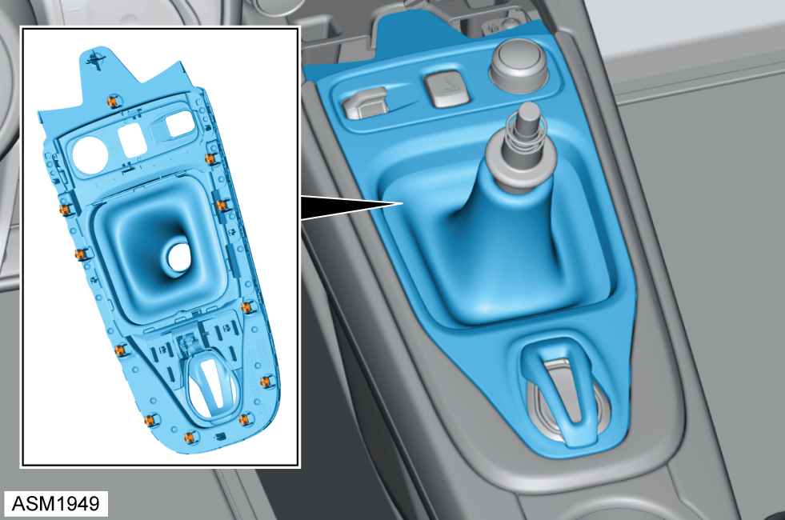

Gaiter - Gear Lever - Manual
Print
Operation Code: 15.19.05-02
Removal
- Remove gear knob. Refer to procedure.
- Remove rubber pad from centre console.

- Release clips (x11) securing centre console finisher to centre console.
NOTE: Release clips working from front to rear.
- Remove centre console finisher.
- Remove M3x12 self tapping screws (x4) securing gear lever gaiter to centre console finisher.
- Remove gear lever gaiter.
Installation
- Installation is the reverse of removal procedure.